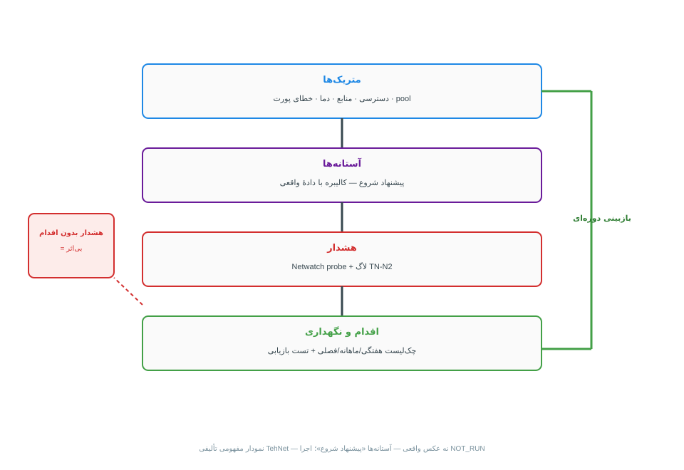

وضعیت درس: DRAFT / NOT_DEPLOYED — در انتظار مرور.
آموزش تصویری از سری پشتیبانی؛ مخاطب: مدیر IT.
سناریوی کاملاً فرضی و آموزشی با دادهٔ ساختگی؛ هیچ شبکهٔ واقعی دستکاری نشده و هیچ اجرای واقعی NOT_RUN است.
نمودار مفهومی و تألیفی است (نه عکس واقعی).
مانیتور یعنی: چند متریک کلیدی را دورهای اندازه بگیرید، برای هرکدام یک آستانهٔ هشدار تعریف کنید و برای هشدار یک اقدام مشخص داشته باشید — مانیتور بدون اقدام فقط دفترچهٔ زنگهای بیپاسخ میشود. شروعِ کوچکِ درست، پنج متریک است: در دسترس بودن (loss/ping)، منابع روتر (CPU/RAM/دیسک)، دما، خطای پورتها (errors/drops) و فضای DHCP pool. ابزار: همان RouterOS بدون نصب هیچ نرمافزار جدیدی — Netwatch برای probe دورها، لاگ و resource برای خود روتر، و چکلیست هفتگی/ماهانه/فصلی برای نگهداری.
| نقش | دستگاه/مقدار | توضیح |
|---|---|---|
| روتر مانیتورشونده | hEX (RB750Gr3)، RouterOS v7.16+ | همان مبناى M3: LAN=192.168.88.1/24 |
| مقصدهای probe | gateway داخلی؟ (خود روتر) → مقصدها: NAS 192.168.88.10 · Printer 192.168.88.11 · اینترنت 8.8.8.8 | سه Netwatch probe |
| کلاینت مدیریتی | ویندوز فرضی | مشاهدهٔ لاگ/منابع با WinBox |
آستانهها پیشنهاد شروعاند و per-سازمان تنظیم میشوند (UNKNOWN عمومی؛ با دادهٔ واقعی کالیبره میشود):
| متریک | ابزار/دستور | آستانهٔ هشدار شروع | اقدام |
|---|---|---|---|
| دسترسی NAS/Printer | Netwatch probe (icmp) هر 30s | down حتی یک پروب | لاگ warning + بررسی فیزیکی/سرویس |
| دسترسی اینترنت | Netwatch probe به 8.8.8.8 هر 30s | down | لاگ + چک NAT/WAN (N1 نردبان) |
| CPU | `/system resource print` دورهای | >70٪ پایدار | بررسی process/connection؛ ریسک فایروال ریاستارت |
| RAM/دیسک | همان | RAM >80٪ · دیسک >90٪ | پاکسازی لاگ/فایل؛ بررسی ruleهای زیاد |
| دما | همان (temperature) | >60-65°C بسته به محیط | تهویه/جای نصب — قبل از خاموشی محافظتی |
| خطای پورت | `/interface ethernet print stats` دورهای | رشد errors/drops | کابل/دوپلکس/ماژول (S3 قواعد) |
| فضای DHCP pool | `/ip pool print` + شمارش lease | >80٪ پر | بزرگکردن pool یا رزروها (M3 قواعد) |
دستورهای بالا قابلیتهای سندشدهٔ RouterOSاند (resource/interface/poe/netwatch در درخت مستندات رسمی)؛ در این درس URL بخشی برایشان ساخته نشده (الگوی صادقانهٔ S2) — فقط صفحات fetchشده URL دارند.
/tool netwatch
add host=192.168.88.10 interval=30s type=simple comment="TN-N2 NAS probe" \
down-script="/log warning message=\"TN-N2: NAS (192.168.88.10) DOWN\"" \
up-script="/log info message=\"TN-N2: NAS back UP\""
add host=8.8.8.8 interval=30s type=simple comment="TN-N2 internet probe" \
down-script="/log warning message=\"TN-N2: INTERNET DOWN\"" \
up-script="/log info message=\"TN-N2: internet back UP\""| دوره | موارد |
|---|---|
| هفتگی | مرور لاگ هشدارها · netwatch status · CPU/RAM/دما · خطای پورتها |
| ماهانه | backup + export جدید و ثبت digest · فضای دیسک · فضای DHCP pool · مرور leaseهای ناشناس · بروزرسانی جدول رزروها با تغییرات |
| فصلی | تست بازیابی از backup (تا فایل backup بدون بازیابیآزمون، پشتیبان حساب نمیشود) · مرور سیاست فایروال با واقعیت فعلی · بازبینی آستانهها با دادهٔ انباشته · سختافزار: دما/گردوغبار/اتصالات |
قاعدهٔ N4 همچنان برقرار است: هر نگهداری با ثبت قبل/بعد و در پنجرهٔ توافقشده.

شرح متنی نمودار (جایگزین تصویر برای دسترسپذیری): حلقهٔ چهارمرحلهای: «متریکها» (دسترسی/منابع/دما/خطای پورت/pool) → «آستانهها» (پیشنهاد شروع، کالیبره با داده) → «هشدار» (Netwatch probe + لاگ TN-N2) → «اقدام و نگهداری» (چکلیست هفتگی/ماهانه/فصلی + تست بازیابی) و بازگشت به متریکها. یک شاخهٔ «بدون اقدام = بیاثر» جدا شده است. برچسب «تألیفی/مفهومی».
| خطا | چرا گران است | درست |
|---|---|---|
| آستانهٔ خیلی حساس | هشدار پیوسته → بیاعتمادی و بیتوجهی | شروع سست + کالیبره با دادهٔ واقعی |
| مانیتور بدون اقدام ثبتشده | زنگ بیپاسخ | برای هر هشدار اقدام مشخص بنویسید |
| اسکریپت خودکار سنگین بدون تست | ریسک رفتار پیشبینینکرده روی تولید | اول فقط لاگ؛ اقدام خودکار با تست جداگانه |
| بکاپ ماهانه بدون بازیابیآزمون | فایل خراب کشف نمیشود | فصلی: restore تست (تا پذیرفته، پشتیبان نیست) |
| نگهداری فقط وقتی خراب میشود | دورهای حذف میشود و رویداد تکراری میماند | چکلیست تقویمی با ثبت انجامشدهها |
| پیوند | مقصد |
|---|---|
| درسهای مرتبط | N1 عیبیابی · N4 پذیرش تحویل · M3 DHCP/DNS |
| نقشهٔ کامل سری | topic map |
| مانیتورینگ و نگهداری دورهای شبکهٔ شما | خدمات پشتیبانی شبکهٔ تهران |
| درس بعدی سری | N3 — قرارداد و SLA (تولید در نوبت بعدی؛ فعلاً فقط در topic map) |